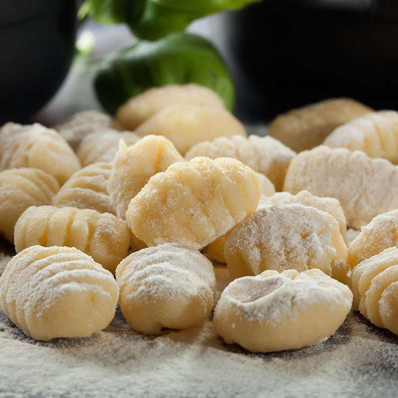
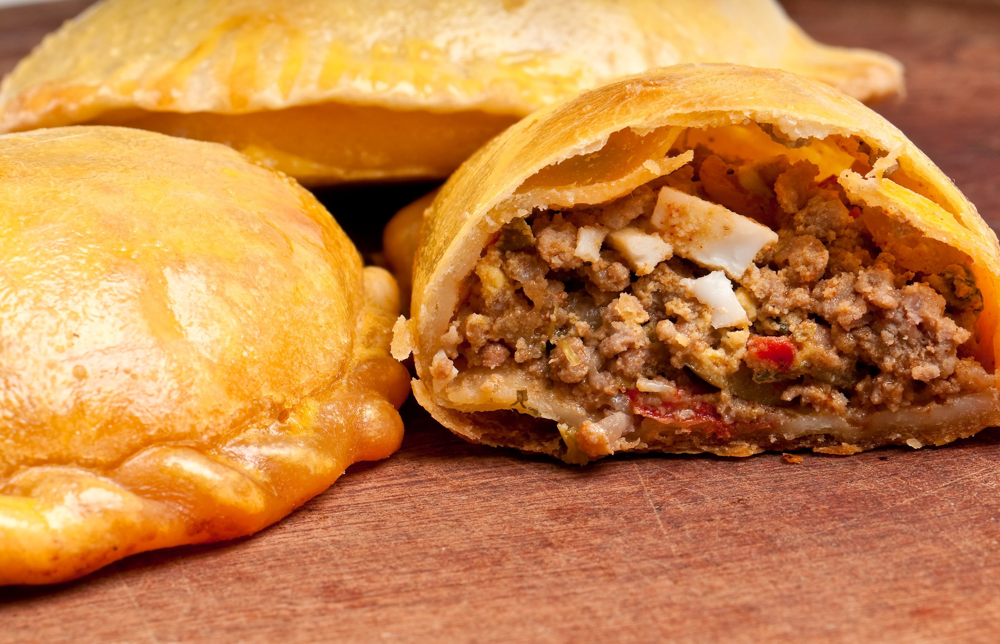

Ñoquis

Pasos:
- Primer paso: Hervir papas y hacer puré
- Segundo paso: Mezclar con huevo, sal y harina
- Tercer paso: Formar tiras y cortar
- Cuarto paso: Hervir hasta que floten
- Quinto paso: Servir con salsa

Pasos:

Pasos: